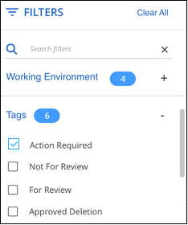
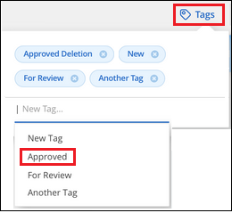

版本資訊
版本資訊
組織您的私有資料
 建議變更
建議變更
BlueXP 分類提供多種方法來管理及組織您的私有資料。如此一來、您就能更輕鬆地查看最重要的資料。
-
如果您已訂閱 "Azure資訊保護（AIP）" 若要分類及保護檔案、您可以使用 BlueXP 分類來管理這些 AIP 標籤。

2023 年 12 月（ v1.26.6 ）版本暫時移除使用 Azure Information Protection （ AIP ）標籤整合資料的選項。 -
您可以將標記新增至您要標記為組織或某種後續追蹤的檔案。
-
您可以將BlueXP使用者指派給特定檔案或多個檔案、以便該人員負責管理檔案。
-
使用「原則」功能、您可以建立自己的自訂搜尋查詢、只要按一下按鈕、就能輕鬆查看結果。
-
當某些重要原則傳回結果時、您可以傳送電子郵件警示給BlueXP使用者或任何其他電子郵件地址。
|
|
本節所述的功能僅在您選擇對資料來源執行完整分類掃描時可用。只有對應掃描的資料來源不會顯示檔案層級的詳細資料。 |
我應該使用標記或標籤嗎？
以下是 BlueXP 分類標記與 Azure 資訊保護標籤的比較。
| 標記 | 標籤 |
|---|---|
檔案標籤是 BlueXP 分類的整合式部分。 |
您必須訂閱Azure資訊保護（AIP）。 |
標籤只會保留在 BlueXP 分類資料庫中、不會寫入檔案。它不會變更檔案、或是存取或修改檔案的時間。 |
標籤是檔案的一部分、當標籤變更時、檔案會變更。這項變更也會變更檔案的存取和修改時間。 |
您可以在單一檔案上有多個標記。 |
您可以在單一檔案上有一個標籤。 |
此標記可用於內部 BlueXP 分類動作、例如複製、移動、刪除、執行原則、 等 |
其他可讀取檔案的系統也會看到標籤、可用於其他自動化作業。 |
只會使用單一API呼叫來查看檔案是否有標記。 |
使用AIP標籤將資料分類
如果您已訂閱、您可以在 BlueXP 分類正在掃描的檔案中管理 AIP 標籤 "Azure資訊保護（AIP）"。AIP可讓您將標籤套用至內容、以分類及保護文件與檔案。BlueXP 分類可讓您檢視已指派給檔案的標籤、新增標籤至檔案、以及在標籤已存在時變更標籤。
BlueXP 分類支援下列檔案類型中的 AIP 標籤： .DOC 、 .DOCX 、 .PDF 、 .PPTX 、 .XLS 、 XLSX 。
|
|
|
將 AIP 標籤整合到您的工作空間中
在管理 AIP 標籤之前、您必須先登入現有的 Azure 帳戶、將 AIP 標籤功能整合至 BlueXP 分類。一旦啟用、您就能在檔案中管理所有人的AIP標籤 "資料來源" 在您的BlueXP工作區中。
-
您必須擁有帳戶和Azure資訊保護授權。
-
您必須擁有Azure帳戶的登入認證資料。
-
如果您打算變更Amazon S3儲存區中檔案的標籤、請確保IAM角色中包含「s 3：PuttObject"」權限。請參閱 "設定IAM角色"。
-
從 BlueXP 分類組態頁面、按一下 * 整合 AIP 標籤 * 。

-
在「整合AIP標籤」對話方塊中、按一下*登入Azure *。
-
在顯示的Microsoft頁面中、選取帳戶並輸入所需的認證資料。
-
返回 BlueXP 分類標籤、您會看到「 _AIP 標籤已成功與帳戶 <account_name> 整合」訊息。
-
按一下「關閉」、您會在頁面頂端看到「_AIP Labels Integrated」（_AIP標籤整合）文字。

您可以從「調查」頁面的「結果」窗格中檢視並指派AIP標籤。您也可以使用原則將AIP標籤指派給檔案。
檢視檔案中的 AIP 標籤
您可以檢視指派給檔案的目前AIP標籤。
在「資料調查結果」窗格中、按一下  以展開檔案中繼資料詳細資料。
以展開檔案中繼資料詳細資料。

手動指派 AIP 標籤
您可以使用 BlueXP 分類新增、變更及移除檔案中的 AIP 標籤。
請遵循下列步驟、將AIP標籤指派給單一檔案。
-
在「資料調查結果」窗格中、按一下
 以展開檔案中繼資料詳細資料。
以展開檔案中繼資料詳細資料。
-
按一下*指派標籤至此檔案*、然後選取標籤。
標籤會出現在檔案中繼資料中。
請依照下列步驟、將 AIP 標籤指派給多個檔案。請注意、您一次最多可將 AIP 標籤指派給 20 個檔案（ UI 中的一個頁面）。
-
在「資料調查結果」窗格中、選取您要標示的檔案。

-
若要選取個別檔案、請核取每個檔案的方塊（
 ）。
）。 -
若要選取目前頁面上的所有檔案、請核取標題列中的方塊（
 ）。
）。
-
-
在按鈕列中、按一下* Label *、然後選取AIP標籤：

AIP標籤會新增至所有選取檔案的中繼資料。
移除 AIP 整合
如果您不再想要管理檔案中的 AIP 標籤、可以從 BlueXP 分類介面中移除 AIP 帳戶。
請注意、您使用 BlueXP 分類新增的標籤不會有任何變更。檔案中的標籤會維持目前的狀態。
-
在「_Configuration」頁面中、按一下「整合AIP標籤」>「移除整合」。

-
按一下確認對話方塊中的*移除整合*。
套用標記以管理掃描的檔案
您可以新增標記至您要標記某種後續追蹤類型的檔案。例如、您可能找到一些重複的檔案、想要刪除其中一個、但您需要檢查一下該刪除哪些檔案。您可以在檔案中新增「Check to DELETE」標記、以便知道此檔案需要進行一些研究、以及未來的某種行動。
BlueXP 分類可讓您檢視指派給檔案的標記、從檔案新增或移除標記、以及變更名稱或刪除現有標記。
請注意、標記不會以AIP標籤是檔案中繼資料一部分的方式新增至檔案。BlueXP 使用者使用 BlueXP 分類來查看標籤、以便查看檔案是否需要刪除或檢查某種後續追蹤類型。

|
指派給 BlueXP 分類檔案的標記與您可以新增至資源的標記無關、例如 Volume 或虛擬機器執行個體。BlueXP 分類標籤會套用至檔案層級。 |
檢視已套用特定標記的檔案
您可以檢視已指派特定標記的所有檔案。
-
按一下 BlueXP 分類中的 * 調查 * 索引標籤。
-
在「資料調查」頁面中、按一下「篩選」窗格中的*標記*、然後選取所需的標記。

「調查結果」窗格會顯示已指派這些標記的所有檔案。
將標記指派給檔案
您可以將標記新增至單一檔案或一組檔案。
若要新增標記至單一檔案：
-
在「資料調查結果」窗格中、按一下
以展開檔案中繼資料詳細資料。 -
按一下「標記」欄位、即會顯示目前指派的標記。
-
新增標記：
-
若要指派現有標記、請按一下「新標記…」欄位、然後開始輸入標記名稱。當您要尋找的標記出現時、請選取該標記、然後按* Enter *。
-
若要建立新標記並將其指派給檔案、請按一下「新標記…」欄位、輸入新標記的名稱、然後按* Enter *。

標記會出現在檔案中繼資料中。
-
若要新增標記至多個檔案：
-
在「資料調查結果」窗格中、選取您要標記的檔案。
-
若要選取個別檔案、請核取每個檔案的方塊（
）。 -
若要選取目前頁面上的所有檔案、請核取標題列中的方塊（
）。 -
若要選取所有頁面上的所有檔案、請核取標題列中的方塊（
）、然後在快顯訊息中顯示  ，單擊* Select all items in list（xxx items）（選擇列表中的所有項目（xxx項）
，單擊* Select all items in list（xxx items）（選擇列表中的所有項目（xxx項）您一次最多可將標記套用至 100,000 個檔案。
-
-
在按鈕列中、按一下* Tag*（標記）、就會顯示目前指派的標記。
-
新增標記：
-
若要指派現有標記、請按一下「新標記…」欄位、然後開始輸入標記名稱。當您要尋找的標記出現時、請選取該標記、然後按* Enter *。
-
若要建立新標記並將其指派給檔案、請按一下「新標記…」欄位、輸入新標記的名稱、然後按* Enter *。

-
-
核准在確認對話方塊中新增標記、並將標記新增至所有選取檔案的中繼資料。
刪除檔案中的標記
如果不再需要使用標記、您可以刪除標記。
只要按一下* x*即可取得現有標記。

如果您選取多個檔案、則標記會從所有檔案中移除。
指派使用者管理特定檔案
您可以將BlueXP使用者指派給特定檔案或多個檔案、以便該人員負責該檔案所需的任何後續行動。此功能通常與功能搭配使用、以將自訂狀態標記新增至檔案。
例如、您的檔案可能包含某些個人資料、允許太多使用者讀寫存取（開放權限）。您可以指派「狀態」標記「變更權限」、並將此檔案指派給使用者「Joan Smith」、讓他們決定如何修正問題。當他們修正問題時、他們可以將「Status（狀態）」標記變更為「completed（已完成）」。
請注意、使用者名稱不會新增至檔案中繼資料的一部分、 BlueXP 使用者使用 BlueXP 分類時就會看到該名稱。
「調查」頁面中的新篩選器可讓您在「指派給」欄位中輕鬆檢視擁有相同人員的所有檔案。
請依照下列步驟將使用者指派給單一檔案。
-
在「資料調查結果」窗格中、按一下
以展開檔案中繼資料詳細資料。 -
按一下*指派對象*欄位、然後選取使用者名稱。

使用者名稱會出現在檔案中繼資料中。
請依照下列步驟將使用者指派給多個檔案。請注意、您一次最多可以指派 20 個檔案給使用者（ UI 中的一個頁面）。
-
在「資料調查結果」窗格中、選取您要指派給使用者的檔案。
-
若要選取個別檔案、請核取每個檔案的方塊（
）。 -
若要選取目前頁面上的所有檔案、請核取標題列中的方塊（
）。
-
-
在按鈕列中、按一下*指派給*、然後選取使用者名稱：

使用者會新增至所有選取檔案的中繼資料。